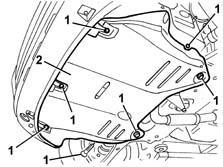
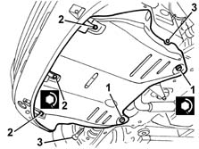

7055B54 under-engine guard - r r
- Path
- Procedures > 70 FITTINGS > 7055 MOULDINGS ON PROTECTIONS > 7055B EXTERIOR PROTECTIONS > 7055B54 under-engine guard - r r
- Kind
- repair procedure (removal / refitting; the operation number is the code)
- Applies to
- all engines; all production periods
- Interactive page
- https://sloeber94.github.io/elrnDB-fMltpl/en/#/2892270
Applies to: all engines; all production periods
 Removing
Removing
 Refitting
RefittingPlace the vehicle on a lift.
Raise the car.
1. Undo the bolts fixing the protective shield under the engine.
2. Remove the protective shield under the engine.

Applies to: all engines; all production periods
Refitting
RemovingCheck that the protective shield under the engine is not damaged.
1. Position the protective shield under the engine and tighten the rear bolts.
 | Fastening | Component | Ø | Value (daNm) |
|---|---|---|---|---|
- | Bolt | UNDE-ENGINE PROTECTION/GUARD | M8 | 2.7 |
2. Tighten the front bolts.
| Fastening | Component | Ø | Value (daNm) |
|---|---|---|---|---|
- | Bolt | UNDE-ENGINE PROTECTION/GUARD | M6 | 8.5 |
3. Tighten the side bolts.

Applies to: all engines; all production periods
Remove the vehicle from the lift.